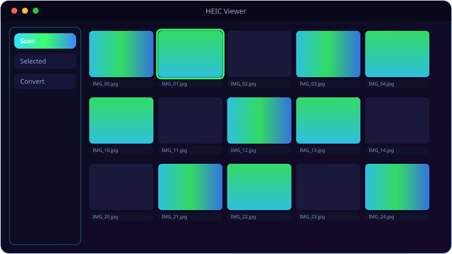

See It In Action
A look inside HEIC Viewer.

What It Does
Everything HEIC Viewer brings to the table.
🔎
Whole-Drive Scan
Pick a drive and HEIC Viewer finds every .heic on it, skipping system folders to avoid permission errors.
👁️
Background Preview
Selected files preview in a non-blocking background thread, so the list never freezes.
☑️
Tick & Convert
A checkbox column drives the conversion batch; row selection drives the preview — independent and clear.
📁
Choose Your Output
Converted JPEGs land in a folder you pick, auto-renaming on collision (stem_1.jpg, stem_2.jpg…).
🌑
Dark, Familiar UI
The same dark Fusion palette as the rest of the suite, so it feels at home.
Get Ready
System requirements.
💻
Minimum
- OS: Windows 10 (64-bit) or Windows 11
- CPU: Dual-core, 2.0 GHz
- Memory: 4 GB RAM
- Graphics: Any DirectX 11 / integrated GPU
- Storage: 250 MB + space for your files
- Display: 1280×768 or higher
🚀
Recommended
- OS: Windows 11 (64-bit)
- CPU: Quad-core, 3.0 GHz
- Memory: 8 GB RAM
- Graphics: Dedicated GPU (optional)
- Storage: SSD with a few GB free
- Display: 1920×1080 or higher
Under the Hood
The details.
| Input | .heic files found by drive scan |
| Conversion | Pillow + pillow-heif → JPEG, auto-rename on collision |
| Preview | Background ThumbLoader thread |
| Platform | Windows 10 / 11 |
Get HEIC Viewer.
Open iPhone HEIC photos and batch-convert them to JPEG.
⬇ Download HEIC ViewerHEIC_Viewer_Setup.exe · free · Windows 10/11